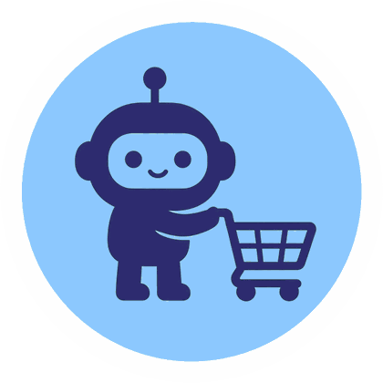

What online stores tell AI shopping agents
Every week we check 2854 retailers and stores (3294 websites) to see whether they publish the profile AI shopping agents read. It's called a UCP profile. We also record four supporting signals: agent tools, AI rules in robots.txt, AI guidance files and product data. No profile doesn't mean AI agents can't shop there. Every figure comes from our own crawl on 2026-11-09. How we measure.
Every Monday: which stores started or stopped publishing a UCP profile, the profile AI shopping agents read. One short email, free.
Unsubscribe anytime. PrivacyIn short: In ShopBot Index's crawl of 9 November 2026, 951 of the 2225 retailers and stores we could check publish a UCP profile, the profile AI shopping agents read (42.7%). By segment: Shopify stores 841 of 1042 (80.7%), big retailers 16 of 255 (6.3%) and other retailers & marketplaces 94 of 928 (10.1%). We couldn't check 629 of the 2854 we track (blocked or unreachable), so they aren't counted, and we re-check every store each Monday.
In the ShopBot Index crawl of 9 November 2026, these are the agent-readiness signals the crawl records. Each figure counts stores, and only stores we could check for that signal. A store counts when at least one of its websites meets the check. Stores we couldn't check are left out. A refusal is not "no". A published file or profile is a declaration, not proof that agents can buy. ShopBot Index does not test purchases.
UCP profile: In the ShopBot Index crawl of 9 November 2026, 951 of 2,225 stores we could check publish a UCP profile (42.7%). https://shopbotindex.com/#summary
ACP: In the ShopBot Index crawl of 9 November 2026, 1 of 1,270 stores we could check publishes an Agentic Commerce Protocol (ACP) discovery file (0.1%). https://shopbotindex.com/signals/acp/
llms.txt: In the ShopBot Index crawl of 9 November 2026, 216 of 1,305 stores we could check publish an llms.txt file (16.6%). https://shopbotindex.com/signals/llms-txt/
AGENTS.md: In the ShopBot Index crawl of 9 November 2026, 31 of 1,248 stores we could check publish an AGENTS.md file (2.5%). https://shopbotindex.com/signals/agents-md/
AI catalog: In the ShopBot Index crawl of 9 November 2026, 3 of 1,263 stores we could check publish an AI catalog (0.2%). https://shopbotindex.com/signals/ai-catalog/
MCP endpoint: In the ShopBot Index crawl of 9 November 2026, 945 of 2,466 stores we could check name an MCP endpoint in their UCP profile (38.3%). https://shopbotindex.com/signals/mcp/
MCP tools list: Only 8 endpoints returned a tools list when queried (924 returned HTTP 422, 11 refused). https://shopbotindex.com/signals/mcp/#tools
AI crawler rules: In the ShopBot Index crawl of 9 November 2026, 279 of 2,075 stores we could check have robots.txt rules that name an AI crawler (13.4%). https://shopbotindex.com/signals/ai-bots-robots/
Wildcard robots.txt block: In the ShopBot Index crawl of 9 November 2026, 7 of 2,075 stores we could check have a wildcard robots.txt rule that disallows the whole site (0.3%). https://shopbotindex.com/signals/ai-bots-robots/#wildcard
Content-Signal: In the ShopBot Index crawl of 9 November 2026, 75 of 2,075 stores we could check publish a Content-Signal line in robots.txt (3.6%). https://shopbotindex.com/signals/ai-bots-robots/#content-signal
Bot protection: In the ShopBot Index crawl of 9 November 2026, 1,181 of 2,429 stores we could check had bot protection that refused our crawler (48.6%). https://shopbotindex.com/signals/bot-protection/
Product data: In the ShopBot Index crawl of 9 November 2026, 161 of 271 stores we could check have schema.org Product markup on a product page we fetched (59.4%). https://shopbotindex.com/signals/product-data/
Poppy: In the ShopBot Index crawl of 9 November 2026, 1 of 1,335 stores we could check publishes a valid Poppy file (0.1%). https://shopbotindex.com/signals/agent-cards/#poppy
A2A agent card: In the ShopBot Index crawl of 9 November 2026, 0 of 1,312 stores we could check publish a valid A2A agent card (0.0%). https://shopbotindex.com/signals/agent-cards/#a2a
Beyond UCP
UCP stays the headline: which stores publish a UCP profile. The same crawl of 9 November 2026 also counts other public signals. Each share uses only the websites that answered for that file. Refused is not "no". An error is not "no". Those websites are left out of the share.
Agent-readiness pass: 2,865 websites reached. Poppy and the A2A agent card were checked on 2,519 websites that answered the UCP pass. That is their own set, not the 2,865 above.
| Signal | Found | Websites that answered | Share | Refused | Error | Vs 2 November 2026 |
|---|---|---|---|---|---|---|
| llms.txt | 226 | 1,581 | 14.3% | 1,217 | 67 | 2 fewer (was 228 of 1,587) |
| AGENTS.md | 31 | 1,517 | 2.0% | 1,271 | 76 | 3 fewer (was 34 of 1,523) |
| MCP tools | 8 | 8 | 100.0% | 11 | 936 | unchanged (was 8 of 8) |
| AI catalog | 3 | 1,542 | 0.2% | 1,240 | 83 | unchanged (was 3 of 1,544) |
| ACP | 1 | 1,548 | 0.1% | 1,237 | 80 | unchanged (was 1 of 1,543) |
| robots.txt AI rules | 312 | 2,333 | 13.4% | n/a | n/a | 3 more (was 309 of 2,334) |
| Content signals | 75 | 2,333 | 3.2% | n/a | n/a | unchanged (was 75 of 2,334) |
| Product data | 171 | 307 | 55.7% | n/a | n/a | 1 more (was 170 of 301) |
| Poppy | 1 | 1,605 | 0.1% | 840 | 73 | 1 more (was 0 of 2,409) |
| A2A agent card | 0 | 1,580 | 0.0% | 851 | 87 | 1 fewer (was 1 of 2,403) |
- AGENTS.md. Left out of the share: 1 disallowed by robots.txt.
- MCP tools. Left out of the share: 1 disallowed by robots.txt; 1,909 whose UCP profile named no MCP endpoint.
- robots.txt AI rules. Left out of the share: 532 with no readable robots.txt. This file has no separate refused or error count.
- Content signals. Left out of the share: 532 with no readable robots.txt. This file has no separate refused or error count.
- Product data. Of the 171 found, 149 have price, currency and availability and 22 have Product markup without all three. Left out of the share: 2 disallowed by robots.txt; 2,556 not reached (no product page). This file has no separate refused or error count.
- Poppy. Left out of the share: 1 disallowed by robots.txt. Checked on 2,519 websites that answered the UCP pass, which is this file's own denominator set.
- A2A agent card. Left out of the share: 1 disallowed by robots.txt. Checked on 2,519 websites that answered the UCP pass, which is this file's own denominator set.
Shopify stores
841 of 1042 we could check publish a UCP profile (80.7%) 1330 tracked · 201 no UCP profile found · 288 couldn't checkBig retailers
16 of 255 we could check publish a UCP profile (6.3%) 350 tracked · 239 no UCP profile found · 95 couldn't checkOther retailers & marketplaces
94 of 928 we could check publish a UCP profile (10.1%) 1174 tracked · 834 no UCP profile found · 246 couldn't checkUCP profile no profile found couldn't check (blocked or unreachable; not counted in the rate)
This week: 6 joined, 0 left since 2026-11-02. See who →
Of those 629 on 9 November 2026: 78 robots.txt disallow, 235 refused (401/403/429/451), 309 timeout or connection error, 7 mixed. How we split that. That split is about why our crawler got no answer; it does not say what AI shopping agents see.
Big retailers with a UCP profile (16)
- American Eagle Outfitters (1 of 1 sites, Other / not identified)
- Asprey (1 of 1 sites, Shopify)
- Boozt (1 of 1 sites, Other / not identified)
- Debenhams PLC (1 of 1 sites, Other / not identified)
- FAO Schwarz (1 of 1 sites, Shopify)
- Farfetch (1 of 1 sites, Other / not identified)
- Flying Tiger Copenhagen (1 of 1 sites, Shopify)
- Hamleys (1 of 2 sites, Shopify)
- IKEA (1 of 2 sites, Other / not identified)
- Mexx (1 of 1 sites, Shopify)
- On AG (1 of 1 sites, Shopify)
- Pepco (6 of 8 sites, Shopify)
- Poundland (1 of 1 sites, Shopify)
- Quiksilver (1 of 2 sites, Shopify)
- The Body Shop (1 of 1 sites, Shopify)
- Zellers (1 of 1 sites, Shopify)
UCP profiles not on Shopify (26)
- American Eagle Outfitters (Big retailers)
- Boozt (Big retailers)
- Debenhams PLC (Big retailers)
- Farfetch (Big retailers)
- IKEA (Big retailers)
- ABC Fine Wine & Spirits (Other retailers & marketplaces)
- Bealls (Other retailers & marketplaces)
- Coldwater Creek (Other retailers & marketplaces)
- Expert (Other retailers & marketplaces)
- Ferrino (Other retailers & marketplaces)
- Fortunoff (Other retailers & marketplaces)
- JHC (Other retailers & marketplaces)
- Lucky's Market (Other retailers & marketplaces)
- MahoganyBooks (Other retailers & marketplaces)
- Media Expert (Other retailers & marketplaces)
- Richer Sounds (Other retailers & marketplaces)
- Scheels All Sports (Other retailers & marketplaces)
- Sleep Country Canada (Other retailers & marketplaces)
- Tinex (Other retailers & marketplaces)
- Wild Oats Markets (Other retailers & marketplaces)
- Zooplus AG (Other retailers & marketplaces)
- explorewatersports.in (Shopify stores)
- kiwla.com (Shopify stores)
- merchit.in (Shopify stores)
- takk.in (Shopify stores)
- JENNi (Other retailers & marketplaces)
What UCP profiles declare
Which stores declare UCP checkout names every store whose profile declares checkout. Declaring checkout is not proof an agent can buy.
| Item | Stores | Share |
|---|---|---|
| Checkout | 947 | 99.6% |
| Fulfillment (shipping options) | 946 | 99.5% |
| Discount codes | 944 | 99.3% |
| Cart | 943 | 99.2% |
| Order management | 937 | 98.5% |
| Catalog lookup | 933 | 98.1% |
| Catalog search | 933 | 98.1% |
| Identity linking (account sign-in) | 926 | 97.4% |
| Buyer consent | 926 | 97.4% |
| Shopify catalog (vendor extension) | 925 | 97.3% |
| dev.shopify.shopping.declared_fields | 925 | 97.3% |
| dev.ucp.common.ask | 925 | 97.3% |
| Permalinks | 925 | 97.3% |
| dev.ucp.common.location.lookup | 106 | 11.1% |
| dev.ucp.common.location.search | 106 | 11.1% |
| dev.ucp.common.payment.authentication | 1 | 0.1% |
| google.commerce.shopping.lookup | 1 | 0.1% |
| google.commerce.shopping.search | 1 | 0.1% |
| complete_checkout | 1 | 0.1% |
| payment_handlers | 1 | 0.1% |
Payment handlers listed
Which payment handlers do stores declare in their UCP profile, counted only among stores that publish a UCP profile. A declared handler is not proof that an agent can pay.
| Item | Stores | Share |
|---|---|---|
| Google Pay | 270 | 28.4% |
| Shopify card handler | 263 | 27.7% |
| Shop Pay | 263 | 27.7% |
| Klarna | 1 | 0.1% |
Which AI assistants name which retailers
From public announcements and help pages only. Details →
| Assistant | Retailers named | Source |
|---|---|---|
| Google Search / AI Mode | Wayfair, Chewy, Quince, select Shopify merchants | Google blog, 2025-11-13 |
| Perplexity | Abercrombie & Fitch, Ashley Furniture, Fabletics, Adorama, Newegg | PayPal newsroom, 2025-11-25 |
| Microsoft Copilot | Urban Outfitters, Anthropologie, Ashley Furniture, Etsy sellers, Shopify merchants (auto-enrolled after an opt-out window) | Microsoft Source, 2026-01-08 |
| ChatGPT | eligible Shopify stores (active by default, can opt out) | Shopify Help Center, checked 2026-10-17 |
| Google AI Mode & Gemini, Microsoft Copilot, Meta | eligible Shopify stores | Shopify Help Center, checked 2026-10-17 |
Frequently asked questions
What is a UCP profile?
A Universal Commerce Protocol (UCP) profile is a JSON file a store publishes at /.well-known/ucp: the machine-readable profile AI shopping agents read. It lists the protocol version, services, capabilities (for example checkout, cart or catalog search) and payment handlers. How we check it.
How many online stores publish a UCP profile?
In our crawl of 9 November 2026, 951 of the 2225 retailers and stores we could check (42.7%). By segment: Shopify stores 841 of 1042 (80.7%), big retailers 16 of 255 (6.3%) and other retailers & marketplaces 94 of 928 (10.1%). These are shares of our list of 2854, not of all online stores.
Which big retailers publish a UCP profile?
16 in the crawl of 9 November 2026: American Eagle Outfitters, Asprey, Boozt, Debenhams PLC, FAO Schwarz, Farfetch, Flying Tiger Copenhagen, Hamleys, IKEA, Mexx, On AG, Pepco, Poundland, Quiksilver, The Body Shop and Zellers. That is 16 of the 255 big retailers we could check. See all big retailers.
What does it mean if a store has no UCP profile?
Only that we found no profile at /.well-known/ucp. Some agent shopping runs through a normal web browser or through channels we can't see from outside, such as product feeds shared privately with AI assistants. Equally, a UCP profile isn't proof that AI agents can shop at a store.
How often is ShopBot Index updated?
Every week. The crawl runs on Mondays; the latest was on 9 November 2026 and the next is due on 16 November 2026. See what changed.
How can I check my own store?
Type its domain into Check your store. It looks the domain up in our latest crawl. If the store isn't in the index yet, email hello@shopbotindex.com and we'll include it in a future crawl.
What did the 9 November 2026 crawl record for each agent-readiness signal?
In the ShopBot Index crawl of 9 November 2026, these are the agent-readiness signals the crawl records. Each figure counts stores, and only stores we could check for that signal. A store counts when at least one of its websites meets the check. Stores we couldn't check are left out. A refusal is not "no". A published file or profile is a declaration, not proof that agents can buy. ShopBot Index does not test purchases.
UCP profile: In the ShopBot Index crawl of 9 November 2026, 951 of 2,225 stores we could check publish a UCP profile (42.7%). https://shopbotindex.com/#summary
ACP: In the ShopBot Index crawl of 9 November 2026, 1 of 1,270 stores we could check publishes an Agentic Commerce Protocol (ACP) discovery file (0.1%). https://shopbotindex.com/signals/acp/
llms.txt: In the ShopBot Index crawl of 9 November 2026, 216 of 1,305 stores we could check publish an llms.txt file (16.6%). https://shopbotindex.com/signals/llms-txt/
AGENTS.md: In the ShopBot Index crawl of 9 November 2026, 31 of 1,248 stores we could check publish an AGENTS.md file (2.5%). https://shopbotindex.com/signals/agents-md/
AI catalog: In the ShopBot Index crawl of 9 November 2026, 3 of 1,263 stores we could check publish an AI catalog (0.2%). https://shopbotindex.com/signals/ai-catalog/
MCP endpoint: In the ShopBot Index crawl of 9 November 2026, 945 of 2,466 stores we could check name an MCP endpoint in their UCP profile (38.3%). https://shopbotindex.com/signals/mcp/
MCP tools list: Only 8 endpoints returned a tools list when queried (924 returned HTTP 422, 11 refused). https://shopbotindex.com/signals/mcp/#tools
AI crawler rules: In the ShopBot Index crawl of 9 November 2026, 279 of 2,075 stores we could check have robots.txt rules that name an AI crawler (13.4%). https://shopbotindex.com/signals/ai-bots-robots/
Wildcard robots.txt block: In the ShopBot Index crawl of 9 November 2026, 7 of 2,075 stores we could check have a wildcard robots.txt rule that disallows the whole site (0.3%). https://shopbotindex.com/signals/ai-bots-robots/#wildcard
Content-Signal: In the ShopBot Index crawl of 9 November 2026, 75 of 2,075 stores we could check publish a Content-Signal line in robots.txt (3.6%). https://shopbotindex.com/signals/ai-bots-robots/#content-signal
Bot protection: In the ShopBot Index crawl of 9 November 2026, 1,181 of 2,429 stores we could check had bot protection that refused our crawler (48.6%). https://shopbotindex.com/signals/bot-protection/
Product data: In the ShopBot Index crawl of 9 November 2026, 161 of 271 stores we could check have schema.org Product markup on a product page we fetched (59.4%). https://shopbotindex.com/signals/product-data/
Poppy: In the ShopBot Index crawl of 9 November 2026, 1 of 1,335 stores we could check publishes a valid Poppy file (0.1%). https://shopbotindex.com/signals/agent-cards/#poppy
A2A agent card: In the ShopBot Index crawl of 9 November 2026, 0 of 1,312 stores we could check publish a valid A2A agent card (0.0%). https://shopbotindex.com/signals/agent-cards/#a2a
Affiliate link: We may earn a commission if you start a Shopify trial through our links. It never changes a store's result.